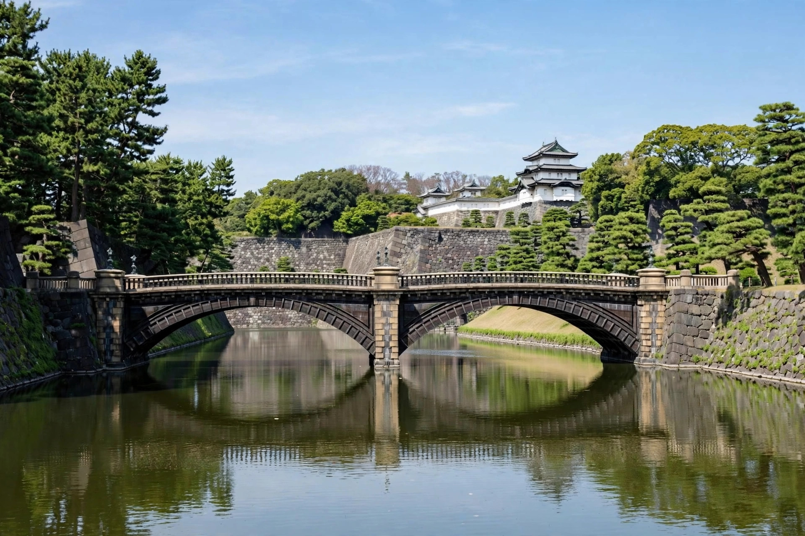

| Emperor of Japan 天皇 | |
| Incumbent | Naruhito (since 1 May 2019) |
|---|---|
| Style | His Majesty (Tennō Heika) |
| Residence | Fukiage Palace, Tokyo Imperial Palace |
| Heir apparent | Fumihito, Crown Prince Akishino |
| Website | Imperial Household Agency |
The Emperor of Japan (天皇, Tennō) is the head of state of Japan and the head of the Imperial Family. Under Article 1 of the Constitution of Japan, the Emperor is "the symbol of the State and of the unity of the people", deriving his position from the will of the people, with whom sovereign power resides. The institution claims a legendary lineage beginning with Emperor Jimmu in 660 BC and is generally regarded as the world's oldest continuing hereditary monarchy.
The Emperor has no powers related to government and may perform only the acts in matters of state enumerated in the Constitution, with the advice and approval of the Cabinet. These include promulgating laws and treaties, convoking the Diet, dissolving the House of Representatives, attesting the appointment of the Prime Minister and the Chief Justice of the Supreme Court, awarding honours, and receiving foreign ambassadors. The Imperial House Law of 1947 governs succession, which is restricted to male offspring in the male line.
Naruhito acceded to the Chrysanthemum Throne on 1 May 2019, beginning the Reiwa era, following the abdication of his father, Emperor Akihito, on 30 April 2019 — the first abdication of a Japanese emperor in about two centuries, made possible by special legislation passed in 2017. His enthronement ceremony (Sokui no Rei) was held on 22 October 2019. By the traditional count of the imperial line, he is the 126th emperor.
The Imperial Regalia of Japan, the Three Sacred Treasures, consist of the sword Kusanagi no Tsurugi, the mirror Yata no Kagami, and the jewel Yasakani no Magatama; they are presented at enthronement as evidence of legitimacy. The Imperial Seal is the sixteen-petal chrysanthemum. The Emperor resides in the Fukiage Palace within the grounds of the Tokyo Imperial Palace, the former site of Edo Castle.